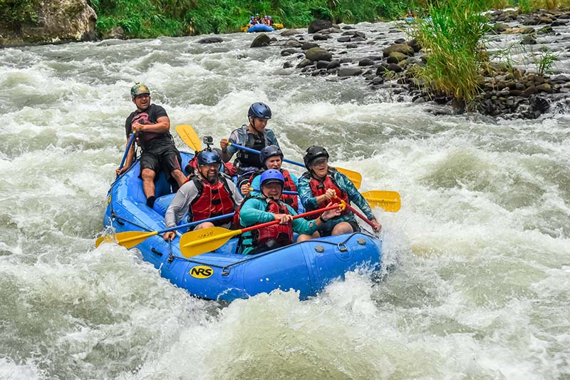
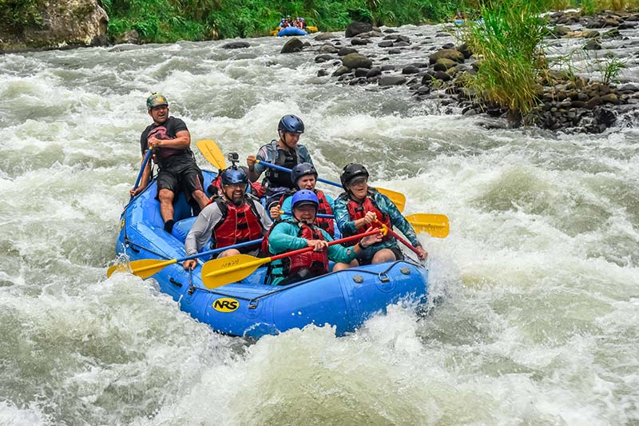

BYU IDAHO SPORTS PLATFORM (CLICK HERE)
BYU IDAHO SPORTS PLATFORM (CLICK HERE)
History
Nigeria White Water Rafting, founded in 2025 by Sunday Prince Augustine, brings the thrill of rafting to Nigeria. The company blends a passion for adventure with innovative technology, offering exciting rafting trips and a seamless online experience for booking. With safety as a top priority, it aims to become a leader in adventure tourism, providing unforgettable memories for every adventurer.Adventure Awaits You!


 
